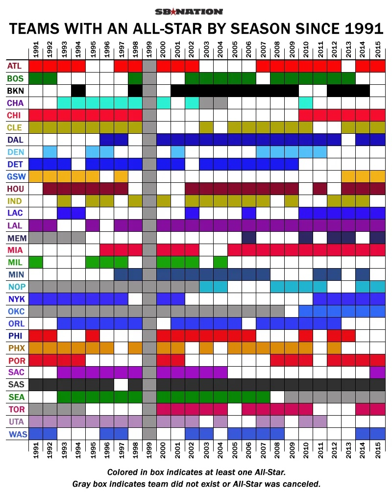

- Lines: Lines: help denote regions to show areas that candidates won electoral votes.
- Areas: the visualization is a map that is divided into areas based on the locations of the states
hw-03: Interactive Webpage, and Marks & Channels

Marks
Channels
- Color: This channel represents the categorical variable that is political party. It is used to distinguish between the states that the Republican and Democratic parties won in the electoral college. This is a good choice for this category because it shows a clear visual distinction between the parties.
- Shapes: This channel represents the cateogorical variable that is states. Different states are different shapes and this is shown by this channel. This is a good choice because it allows for the creation of a map that is easily recognizable and shows the regions based on state, which is critical to this information. Moreover, squares are used at the bottom to offer more information about states where both parties are represented equally. This is also a good idea because it visually helps differentiate how each party impacted that state. Moreover, shapes are used to create a bar where the overall votes obtained by both candidates is shown. This is a good choice because it offers insight into the overall results of the race.
- This channel represents the quantitative variable that is area through a sequencial order. This again helps create the visualization of the map. Diffeent states are different sizes and this reflects different areas. For states like California or Texas, this is a very important piece of information to decide their impact on the race. Therefore, this is a very good choice! Moreover, areas are used to show which candidate got more votes overall, offering a easy way to quantify the proportion of total votes each candidate got at the end. This makes it a very good channel to represent that information!
Colormaps
- Categorical: This colormap represents the cateogorical variable and there are 8 categories. It is like a quantitative variable, but it's not actually a number, it's a classification using colors. This is a good choice since there are 8 different All-Star numbers. Therefore, 8 colors are required to represent them all.

Marks
- Lines: help to build horizontal and vertical coordinate system.
- Areas: indicate the team in different years.
Channels
- Color: The channel represents categorical variable that is the team of NBA. It is a good choice. Because there are over 20 teams in NBA. Without color, it would be difficult to distinguish between different teams.
- Area: There are many box areas on the picture. This channel represents categorical variable that is a certain team at a certain time. It is a good choice. In addition to being able to match every team with the year, areas show us how many years the team hava over an All-Star.
Colormaps
- Categorical: This colormap represents the categorical variable that is team. This a good choice since there are nearly 30 teams. Thereare, all that is required are nearly 30 colors to represent them all.

Marks
- Dots: represent balls of different launch angles and exit velocity.
- Lines: help to build horizontal and vertical coordinate system and represent ways of playing the ball.
- Areas: indicate the team in different years.
Channels
- Color: The channel represents categorical variable that is the scoring value of the batted ball. This is a good choice. These two colors and their gradients clearly indicate the different scores. We can clearly see which area has a high score, such as home run.
- Dot: The channel represents balls of different launch angles and exit velocity. This is a good choice. Because the strokes are independent of each other and there are many strokes. Using this way to show each stroke more clearly than other ways.
- Line: The channel represents categorical variable. Three dotted lines are used to distinguish the three ball movement modes. This is a good choice. It adds more information to the graph. We can see which way has a higher scoring value.
- Area: The channel represents quantitative variable. We can see what the proportion of different scoring values is. This is a good choice. For example, the area with a lower than average score is larger. The area with the highest scoring rate is small, has an angle and a high speed. It is a good channel.
Colormaps
- Categorical: This colormap represents the categorical variable. It's a good choice since the difference and the shades of the color expressed scoring value well.